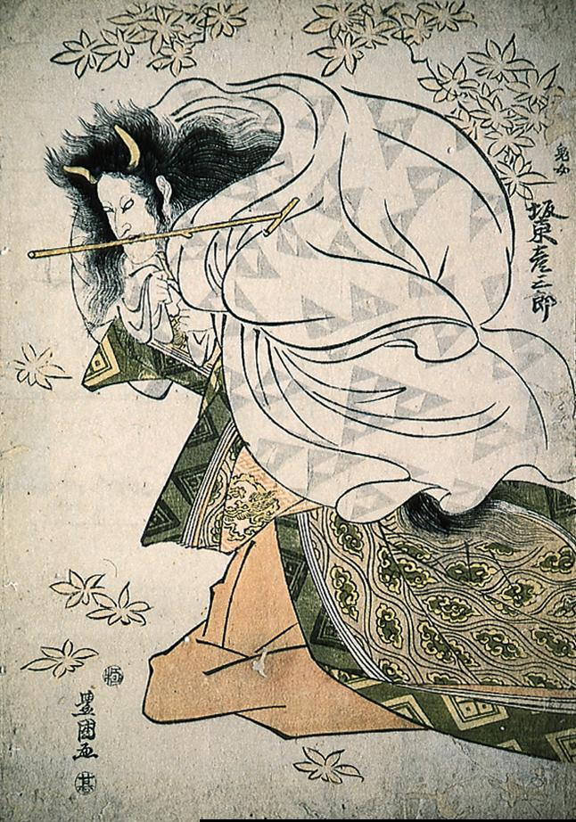

紅葉が舞うなか、打ち掛けを羽織って背を丸める鬼女。額には2本の角が生えている。
著作者：歌川豊国／出典：親書誌：M80_naprstek_0010：鬼女坂東彦三郎；キジョバンドウヒコサブロウ／日付：2011／資源識別子：M80_naprstek_0010_0001_0000
Copyright (c)2010- International Research Center for Japanese Studies, Kyoto, Japan. All rights reserved.